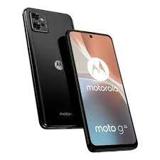

Motorola Moto G32:
Descrição:

Fotografia profissional no seu bolso
Descubra infinitas possibilidades para suas fotos com as 3 câmeras principais de sua equipe. Teste sua criatividade e jogue com iluminação, diferentes planos e efeitos para obter ótimos resultados.
Além disso, o dispositivo possui uma câmera frontal de 16 Mpx para que você possa tirar selfies divertidas ou fazer videochamadas.
Melhor desempenho
Sua memória RAM de 4 GB permite que seu smartphone funcione sem problemas e sem demora ao executar várias tarefas, jogar jogos ou navegar.
Desbloqueio facial e de impressão digital
Máxima segurança para que apenas você possa acessar o sua equipe. Você pode escolher entre o sensor de impressão digital para ativar seu telefone com um toque, ou o reconhecimento facial que permite desbloquear até 30% mais rápido.
Vida útil da bateria mais longa
Desconecte-se! Com a super bateria de 5000 mAh você terá energia por muito mais tempo para jogar, assistir séries ou trabalhar sem recarregar.